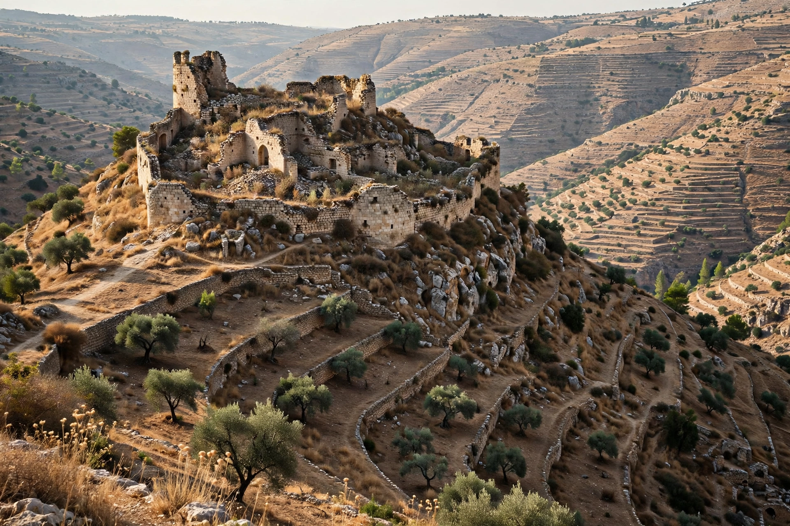

| Betar | |
|---|---|
| Location | Khirbet al-Yahud, near Battir, West Bank |
| Region | Judaean Hills, southwest of Jerusalem |
| Key event | Final siege of the Bar Kokhba revolt, AD 135 |
| Traditional date of fall | 9 Av (Tisha B'Av), 135 AD |

Betar (Hebrew: בֵּיתָּר, also Bethar or Beth-Ter) was an ancient Jewish fortified town in the Judaean Hills, identified with the ruin of Khirbet al-Yahud beside the Palestinian village of Battir, southwest of Jerusalem. It is remembered as the last stronghold of Simon bar Kokhba, whose siege and fall in AD 135 ended the Bar Kokhba revolt and, in rabbinic tradition, completed the national catastrophe mourned on Tisha B'Av.
As Roman forces under Sextus Julius Severus methodically reduced the rebel-held countryside in 134–135, Bar Kokhba withdrew to Betar, a naturally strong position on a steep hill ringed by deep valleys, fortified with walls and supplied by cisterns and a spring. The Romans invested the town with a circumvallation — traces of the siege wall and camps remain visible in the landscape — and starved it into submission. Rabbinic accounts in the Jerusalem Talmud and Lamentations Rabbah embellish the fall with legend: the town was betrayed, one story says, when a Samaritan tricked the defenders; Bar Kokhba, suspecting his aged uncle Rabbi Eleazar of Modi'in of collusion, killed the sage whose prayers had protected the city, and Betar fell that day.
Tradition fixes the fall of Betar on the Ninth of Av — the same date as the destruction of both Temples — and describes slaughter on an immense scale: the Talmud claims the blood ran to the sea and that for years the surrounding vineyards needed no manure, fertilized by the dead, who were long left unburied until permission was granted in the days of the sages at Yavneh. The liturgical response was institutional: the sages added the blessing HaTov veHaMetiv ("who is good and does good") to the Grace after Meals in thanksgiving for the burial. Archaeology confirms a violent destruction in 135 but cannot verify the legendary numbers; the site saw later, smaller occupation in the Byzantine and early Islamic periods.
The name Betar was revived by the Zionist youth movement Betar (Brit Yosef Trumpeldor), founded in 1923, which adopted the ancient fortress as a symbol of Jewish self-defense; the modern settlement of Beitar Illit stands a few kilometers from the ancient site.